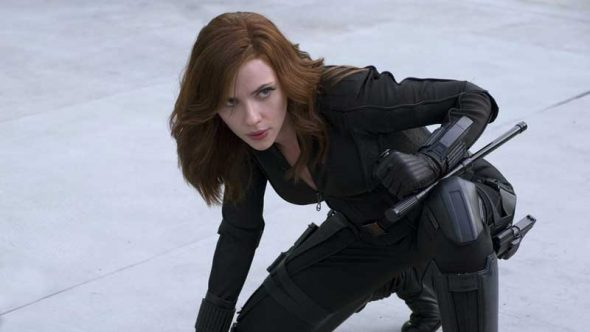
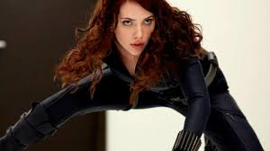
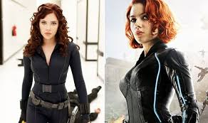
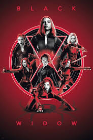
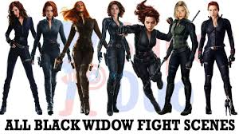
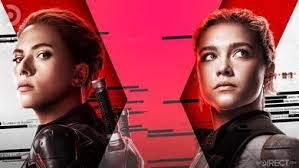
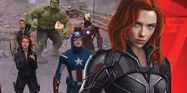

Identity: Natasha Romanoff Gender: Female height: 5'7" Weight: 131lbs Place of orgin: Stalinggrad,Former U.S.S.R Education: Unrevealed (formerly believe to be college graduate) intensive espionage training through Taras Romanov and The Red Room Academy powers: Slowed AgingSuperhuman Durability GROUP AFFILIATION: AvengersS.H.I.E.L.D.Secret Avengers
Natasha Romanoff was trained from a young age to cultivate a very specific set of skills in a Russian facility called the Red Room. There she honed the skills that would turn her into a human warrior who continues to stand shoulder-to-shoulder with super soldiers, Asgardians and people in armored suits. However, she eventually eschewed her KGB masters, switched allegiances and began working for the good guys.
Trained by the BestExhibiting no super human abilities, the Black Widow boasts ultimate human levels of strength, agility, and stamina. She is extensively trained to near perfection in a variety of fighting styles, such as karate, judo, kung fu, and wrestling, and with all manner of weapons—both traditional and high-tech—combined with her background in gymnastics, acrobatics, and ballet to always accomplish her mission. She can use a simple handgun just as well as a Chitauri battle staff or even Captain America's shield. Her signature weapons include dual batons, a pair of Glock 26s and the Black Widow’s Bite—bracelets that discharge electricity. Romanoff also displays great skill when it comes to hacking in computers and technological systems to dig for information or regaining control.
Beware Her Bite
Many of the Black Widow's enemies were assigned to her, first by the KGB and then by S.H.I.E.L.D. In more recent years, though, she assists in taking down Ivan Vanko, Justin Hammer, the Chitauri, HYDRA, Baron Wolfgang von Strucker, and Helmut Zemo among others. And those are just the targets we know about. Some notable foes include, the Asgardian god of mischief, Loki and Ultron. She proves a formidable opponent to Loki, who assumes that he is able to manipulate her when he recalls her past misdeeds. Instead, it is Natasha who gets the upper hand on him, determining that he plans to release the Hulk as part of his plan. When Ultron captures her, she still undermines him to give the Avengers her location, helping them in their plan to defeat him.
Following the events of the Sokovia Accords and Civil War, Romanoff is later forced to come out of hiding with Steve Rogers and Sam Wilson when Thanos and his followers come to Earth in a quest to gain all six Infinity Stones, which would could instantaneously eliminate half of all life in the Universe with a snap of a finger.
Although she was raised to be autonomous and without attachments, the Black Widow has proven herself an exceptional team player. Fellow agent and Avenger Clint Barton seems to be Natasha Romanoff's best friend. She feels she owes him a debt for the role he played in bringing her over from the KGB, instead of eliminating her as a target. She seems to care for him quite deeply, as she bargains for his release when Loki has him under his control. Also, at first, she is the only Avenger to know the existence of Hawkeye’s family.
The Black Widow is loyal to S.H.I.E.L.D. and Nick Fury before they both realize HYDRA manipulated them. Fury brings Romanoff and Barton in when he activates the Avengers Protocol, putting them side by side with Captain America, Iron Man, Hulk and Thor. She goes on to fight alongside with Scarlet Witch, Vision, Falcon, War Machine, Winter Soldier, Spider-Man, Black Panther, and the Dora Milaje.
According to Arnim Zola, Natasha Romanoff was born in 1984. Sometime shortly after that, she was indoctrinated by the Red Room, a Russian training program that took young girls and turned them into lethal undercover agents. In this era, Romanoff met Bucky Barnes during his time as the Winter Soldier, though the exact nature of their relationship has not yet been fully disclosed.
Romanoff proved an incredible asset for the KGB and succeeded in many of her missions. By her own admission, she didn't care who she took out or why. Several years back, S.H.I.E.L.D. sent agent Clint Barton to kill the Widow, but he made a different call and helped bring her in as S.H.I.E.L.D. asset.
The Black Widow got her first taste of the Super Hero life when Director Nick Fury assigned her to pose as Natalie Rushman and keep an eye on Tony Stark, who had already told the world he was Iron Man. As his new assistant at Stark Industries, Romanoff traveled with Stark to Monaco where he first faced off against Ivan Vanko. Shortly after revealing herself as a S.H.I.E.L.D. agent, she injected Stark with lithium dioxide to help him deal with the palladium poisoning from the arc reactor in his chest.
Following the events of Justin Hammer and Ivan Vanko’s assault at the Stark Expo Presentation, Romanoff assessed Iron Man as an important asset, but noted that Stark suffered from compulsive behavior, self-destructive tendencies, and narcissism, making him unfit for the Avengers program by S.H.I.E.L.D.’s standards.
Two years later, S.H.I.E.L.D. agent Phil Coulson sent her on an undercover mission in India, after Agent Barton had been compromised, to recruit Bruce Banner AKA the Hulk to aid in locating the Tesseract that had been stolen by Loki. Assembling as the Avengers, Romanoff along with Banner, Stark, Steve Rogers, Loki’s brother Thor, and Barton, free from his hypnotic state, were forced to battle Loki. The Asgardian prince used the Tesseract to open a portal unleashing his army of alien invaders, the Chitauri, in the streets of New York. Successfully closing the rift and neutralizing the threat, Romanoff returned to S.H.I.E.L.D. with Barton.
A few years following the Battle of New York, Romanoff and Captain America were assigned a mission to retake the Lemurian Star from pirates led by Georges Batroc. Widow had a secret side assignment from Director Fury to retrieve confidential S.H.I.E.L.D. files in a flash drive. In possession of the drive, Fury became the target of an assassin, the Winter Soldier. Hacking the protected files, Romanoff and Rogers went to Camp Leigh where the consciousness of Arnim Zola revealed HYDRA had not only survived World War II, but has manipulated S.H.I.E.L.D. from the beginning, with the Winter Soldier. Despite feeling duped for essentially trading KGB overlords for secret HYDRA ones, Widow worked with Captain America, the newly-recruited Falcon (Sam Wilson), and a wounded, but alive, Director Fury to put a plan in place to prevent HYDRA’s plan. They needed to not only stop this plan—Project Insight, meant to massacre millions deemed a threat to HYDRA’s new world order—from being initiated, and but also stop the Winter Soldier, who was revealed to be Steve Roger’s brainwashed best friend, Bucky Barnes.
After releasing the secrets of both S.H.I.E.L.D. and HYDRA, as well as her own dark history, Romanoff appeared before the Senate defending the dismantling of S.H.I.E.L.D. With all her covers blown, she gave Rogers a dossier on the Winter Soldier and then left to find a new identity.
Black Widow reassembled with the Avengers a year later in Sokovia, as the team raided Baron Wolfgang von Strucker’s HYDRA base to reclaim Loki’s scepter. Under the influence of Wanda Maximoff’s Scarlet Witch telekinetic powers, Romanoff was forced to relive her nightmarish past with the KGB and the Red Room’s Graduation Ceremony that sterilized her.
With Avengers Tower compromised by Ultron, the Avengers went off-the-grid to Barton’s homestead. Romanoff’s romantic overtures were rebuffed by Banner who believed there was no future with him knowing how dangerous his alter-ego is. Opening up about her past, Romanoff revealed how she sees herself as a monster as well.
Captured by Ultron in a Sokovian HYDRA base, Banner was sent to free Widow where she declared her love for him. Reuniting with the Avengers, the heroes fought Ultron’s drones and helped the Sokovians to safety. Following the battle, Romanoff tried making contact with Banner, but Hulk canceled the call, going into stealth mode and disappearing for two years.
In the wake of the Ultron battle and the recruitment of new Avengers Scarlet Witch, Vision, War Machine and Falcon, Secretary of State Thaddeus Ross enacted the Sokovia Accords, an agreement the Avengers were expected to sign that would make them part of the United Nations, an act Captain America strongly opposed. Despite her nature of operating in the shadows and her friendship to Rogers, Romanoff believed the better play with staying together and joined Stark’s team in support of governmental oversight. At the climax of the Civil War, Romanoff revealed she had been on Rogers’ side, even holding off the Black Panther in order for Rogers and Barnes to deal with Helmut Zemo. Betrayed, Stark halfheartedly warned her that Ross and the government will be coming for her. Romanoff left the Avengers Headquarters a fugitive.
On the run and operating underground, Captain America, Falcon, and Black Widow were forced out of the shadows after stepping in to help Scarlet Witch and Vision fend off Proxima Midnight and Corvus Glaive in Scotland, and the larger Thanos threat as he pursued all six Infinity Stones to wipe out half of all life in the Universe. Heading to the Avengers Compound in upstate New York, Widow, Cap, Falcon, Vision, and Scarlet Witch reunited with James Rhodes, who ignored Secretary of State Ross’ demands to arrest the fugitives, and Bruce Banner, who had been missing after spending several years in space. In an attempt to separate Vision from the Mind Stone so they could destroy it and keep it out of Thanos’ hands, the group traveled to Wakanda. Joined by Wakanda’s tribes and Dora Milaje, Black Widow and the Avengers presented a front to Thanos’ alien hordes.
Wakanda, overwhelmed by the alien Outriders, received a much-needed boost from the arrival of Thor, his newly acquired Stormbreaker, and Guardians of the Galaxy Rocket and Groot. During the battle, Black Widow, Okoye, and Scarlet Witch worked together to take Proxima Midnight off the board. When Thanos ultimately arrived on Earth, Widow unsuccessfully tried to stop the Mad Titan from obtaining Vision’s Mind Stone as he subdued her with Earthen tendrils. With all six Infinity Stones now in his possession, Thanos snapped half of all life in the Universe from existence. In Wakanda, Black Widow, along with Okoye, M’Baku, Rocket, Thor, Captain America, War Machine, and Hulk, survived the genocide and watched helplessly as many of their friends and allies disintegrated.
